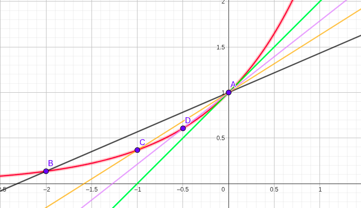
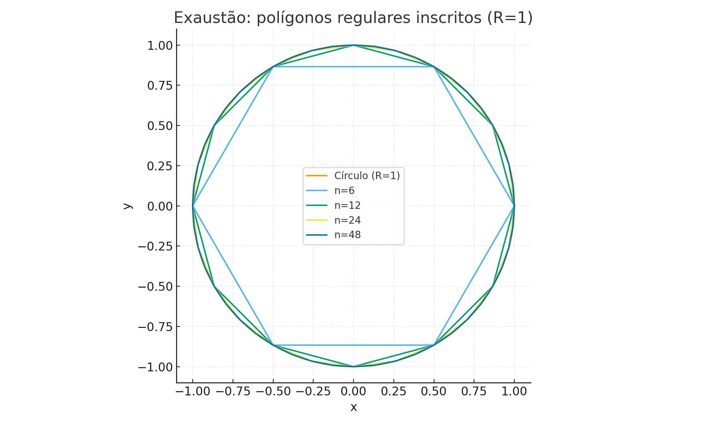

🧠 Module 1.1: What is Calculus? History and Applications
← Course Summary · ← Mathematics Courses · ← Mathematics Section
1 🧠 Module 1.1: What is Calculus? History and Applications
- Basic notions of algebra (operations with expressions, simple equations).
- Familiarity with elementary functions (line, parabola, exponential, logarithm).
- Ability to interpret Cartesian graphs.
The formulas in this course are prepared in LaTeX, the academic standard for writing mathematics,
which ensures clarity and typographic quality in presentation.
👉 You will only see the final result, without needing to know LaTeX.
1.1 ✨ What is Calculus?
1.1.1 🌱 Initial Intuition
Imagine a car on the road: the speedometer shows how the speed is changing right now; the total distance depends on adding up small segments.
That is the spirit of calculus: studying change and accumulation in the real world.
1.1.2 📐 Mathematical Formulation (concise)
- Change → rates of variation (derivatives).
- Accumulation → totals and areas (integrals).
- Limit → the formal basis that gives precision to the “instantaneous” and the “continuous”.
1.2 The Two Fundamental Problems of Calculus
1.2.1 🌱 Intuition: Tangents and Areas
- Tangent problem: what is the slope of a curve at a point?
- Area problem: what is the area of a region bounded by curves?
1.2.2 📐 Mathematical Formulation
- Tangent at \(A=(a,f(a))\): the slope of the tangent is the value towards which the secants converge when the second point approaches \(A\).
- Area on \([a,b]\): the area under \(y=f(x)\) is the value towards which the sums of small rectangles converge as we refine the partition.
1.3 🔎 Visual Motivation — The Tangent Problem
We use the function \(y=e^x\) at the point \(A(0,1)\). In the figure, secant lines \((A–B, A–C, A–D)\) “rotate” until they become the green line, which represents the tangent at \(A\).
Figure — Tangent approximation by secants for \(y=e^x\)

1.3.1 🧮 Mini Numerical Example (without limit notation)
For \(y=e^x\) at \(x=0\), consider the secant between \(x=0\) and \(x=h\).
The slope of this secant is \[
m(h)=\frac{e^{h}-e^{0}}{h}=\frac{e^{h}-1}{h}.
\]
Table (illustrative values):
| \(h\) | Expression of \(m(h)\) | Approx. value |
|---|---|---|
| 1 | \(\dfrac{e-1}{1}\) | 1.7183 |
| 0.5 | \(\dfrac{e^{0.5}-1}{0.5}\) | 1.2974 |
| 0.1 | \(\dfrac{e^{0.1}-1}{0.1}\) | 1.0517 |
| 0.01 | \(\dfrac{e^{0.01}-1}{0.01}\) | 1.0050 |
📌 Observation: the numerical values show that, as \(h \to 0\), \(m(h)\) approaches 1.
Therefore, the slope of the tangent line to the graph of \(y=e^x\) at \(x=0\) is 1.
This is the tangent problem, one of the two fundamental problems of calculus.
1.4 🔎 Visual Motivation — The Area Problem (Method of Exhaustion)
Consider a circle of radius 1. We inscribe regular polygons with \(n\) sides.
As \(n\) grows, the polygon’s area approaches the area of the circle — this is Archimedes’ method of exhaustion.
Figure — Inscribed polygons approximating the area of the circle (R=1)

1.4.1 🧮 Numerical Example (area of inscribed polygon)
For an \(n\)-sided polygon inscribed in the unit circle, the area is \[ A_n=\frac{n}{2}\,\sin\!\left(\frac{2\pi}{n}\right). \]
| \(n\) | \(A_n\) | \(\pi - A_n\) |
|---|---|---|
| 4 | 2.0000 | 1.1416 |
| 6 | 2.5981 | 0.5435 |
| 12 | 3.0000 | 0.1416 |
| 24 | 3.1058 | 0.0358 |
| 48 | 3.1326 | 0.0090 |
| 96 | 3.1394 | 0.0022 |
📌 Reminder: the area of a circle is given by \(\pi r^2\).
For \(r=1\), the area is \(\pi \approx 3.1416\).
Thus, the last column of the table shows how the difference \(\pi - A_n\) tends to zero as \(n\) increases.
This reasoning anticipates the integral as a tool to measure areas and accumulations — the area problem, the other fundamental problem of calculus.
1.5 📜 A Brief History of Calculus
- Archimedes (3rd century BC): method of exhaustion (areas and volumes) — seed of integral calculus.
- Fermat (17th century): techniques for tangents — seed of differential calculus.
- Newton (1643–1727): focused on motion and Physics; called derivatives fluxions.
- Leibniz (1646–1716): clear and general notation (symbols we still use today).
Later we will see that change (derivatives) and accumulation (integrals) are connected by a central result — the Fundamental Theorem of Calculus — which unifies the subject.
1.6 ✅ Wrapping Up the Introduction
- Calculus answers two universal questions:
- How fast is something changing right now? (tangents/derivatives)
- How much has accumulated over an interval? (areas/integrals)
- How fast is something changing right now? (tangents/derivatives)
- In this opening, we avoided formal symbols of limits/derivatives/integrals — focusing on visual and historical intuition.
- Formalization will come step by step, always connected to figures and numerical examples.